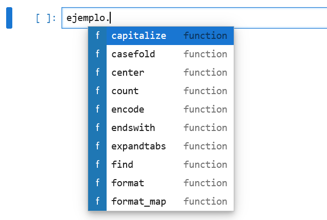

simples = 'Hay pocas cosas tan ensordecedoras como el silencio'
print(simples)Hay pocas cosas tan ensordecedoras como el silencioObjetivo. Explicar el tipo de dato básico cadena (str) y como se usa en diferentes contextos.
En Python, una cadena (string) es una secuencia de caracteres utilizada para representar texto.
Las cadenas se pueden crear utilizando:
'),") o""" o '''.Son inmutables, lo que significa que no se pueden cambiar una vez que se han creado. Sin embargo, se pueden crear nuevas cadenas basadas en operaciones realizadas en las cadenas originales.
Veamos algunos ejemplos.
':simples = 'Hay pocas cosas tan ensordecedoras como el silencio'
print(simples)Hay pocas cosas tan ensordecedoras como el silencio":dobles = "Hay pocas cosas tan ensordecedoras como el silencio"
print(dobles)Hay pocas cosas tan ensordecedoras como el silencio""" y ''':triples1 = '''Hay pocas cosas tan ensordecedoras como el silencio'''
print(triples1)
triples2 = """Hay pocas cosas tan ensordecedoras como el silencio"""
print(triples2)Hay pocas cosas tan ensordecedoras como el silencio
Hay pocas cosas tan ensordecedoras como el silencioprint(type(simples), type(dobles), type(triples1), type(triples2), sep="\n")<class 'str'>
<class 'str'>
<class 'str'>
<class 'str'>Observa que el tipo de dato es str.
Las cadenas pueden contener caracteres especiales como cambio de línea, tabulador, entre otros.
Para que estos caracteres se puedan representar se requiere del caracter de escape \.
Algunos de estos caracteres se muestran en la siguiente tabla:
| Secuencia de escape | Significado |
|---|---|
\ |
Diagonal invertida para ignorar el cambio de línea |
\\ |
Diagonal invertida (\) |
\' |
Comilla simple (') |
\" |
Comilla doble (") |
\n |
Cambio de línea (ASCII Linefeed LF) |
\t |
Tabulador (ASCII Sangría horizontal TAB) |
La documentación completa se puede encontrar en el siguiente enlace: Escape sequences.
Enjoy the moments now, because they don't last foreverPython "pythonico"# 1.A. Forma 1. Usamos el caracter de escape
poema = 'Enjoy the moments now, because they don\'t last forever'
print(poema)Enjoy the moments now, because they don't last forever# 1.A. Forma 2. Definimos la cadena con " "
poema = "Enjoy the moments now, because they don't last forever"
print(poema)Enjoy the moments now, because they don't last foreverObserva que es posible imprimir ' sin usar el caracter \ si la cadena se define con " y viceversa, como se muestra a continuación:
# 1.B. La cadena puede tener " dentro de ' ... '
titulo = 'Python "pythonico"'
print(titulo)Python "pythonico"#1.B. Usando el caracter de escape
titulo = "Python \"pythonico\""
print(titulo)Python "pythonico".
Definir e imprimir el siguiente texto:
Desde muy niño
tuve que "interrumpir" 'mi' educación
para ir a la escuela# Forma 1.
queja = "Desde muy niño \ntuve que \"interrumpir\" 'mi' educación \npara ir a la escuela"
print(queja)Desde muy niño
tuve que "interrumpir" 'mi' educación
para ir a la escuelaEn esta primera forma definimos la cadena usando comillas dobles. Para imprimir las dobles comillas usamos el caracter de escape \". De igual manera, para indicar el cambio de línea usamos \n. Para imprimir las comillas simples (') no es necesario realizar nada especial dado que la cadena se define usando dobles comillas ".
# Forma 2. Una cadena larga la definimos con triples comillas simples.
queja = '''
Desde muy niño
tuve que "interrumpir" 'mi' educación
para ir a la escuela
'''
print(queja)
Desde muy niño
tuve que "interrumpir" 'mi' educación
para ir a la escuela
Observa que en el ejemplo anterior la cadena contiene comillas dobles y simples (" y '), pero no hay necesidad de usar el caracter de escape para imprimirlas; de igual manera no fue necesario indicar los cambios de línea, estos se toman de manera implícita. Lo anterior fue posible por el uso de las triples comillas para definir la cadena.
# Forma 3. Una cadena larga la definimos con triples comillas dobles.
queja = """
Desde muy niño
tuve que "interrumpir" 'mi' educación
para ir a la escuela
"""
print(queja)
Desde muy niño
tuve que "interrumpir" 'mi' educación
para ir a la escuela
.
Definir e imprimir el siguiente texto:
El siguiente es un ejemplo de función:
--------------------------------------
def funcion(N):
suma = 0
for i in range(N):
suma += 1
return sumaUna manera directa es mediante el uso de triples comillas dobles:
codigo = """
El siguiente es un ejemplo de función:
--------------------------------------
def funcion(N):
\tsuma = 0
\tfor i in range(N):
\t\tsuma += 1
\treturn suma
"""
print(codigo)
El siguiente es un ejemplo de función:
--------------------------------------
def funcion(N):
suma = 0
for i in range(N):
suma += 1
return suma
Observa que cuando el texto es largo y de varias líneas, conviene usar triples comillas. Para agregar la sangría al principio de algunas líneas usamos el tabulador \t.
La indexación permite acceder a diferentes elementos o rangos de elementos de una cadena.
N elementos, se numeran empezando en 0 y terminando en N-1, el cual representa el último elemento de la cadena.-1 representa el último elemento y -N el primer elemento.Veamos el siguiente ejemplo:
ejemplo |
= |
M |
u |
r |
c |
i |
é |
l |
a |
g |
o |
| índice positivo | \(\rightarrow\) | 0 |
1 |
2 |
3 |
4 |
5 |
6 |
7 |
8 |
9 |
| índice negativo | \(\rightarrow\) | -10 |
-9 |
-8 |
-7 |
-6 |
-5 |
-4 |
-3 |
-2 |
-1 |
N = 10 elementos.0 a 9.-1 a -10.Ahora veamos algunos ejemplos de acceso a ciertos elementos de la cadena.
# Definimos la cadena
ejemplo = 'Murciélago'
print(ejemplo)
print(type(ejemplo))Murciélago
<class 'str'># Primer elemento de la cadena
print(ejemplo[0]) M# Elemento en la posición 5
print(ejemplo[5]) é# Elemento en la posición 9 (en este caso es el último)
print(ejemplo[9]) o# Último elemento de la cadena
print(ejemplo[-1]) o# Elemento en la posición -6 o equivalentemente en la posición 4
print(ejemplo[-6])
print(ejemplo[4])i
i# Elemento en la posición -10, el primero en este caso
print(ejemplo[-10]) MSe puede obtener una subcadena a partir de la cadena original, para ello usamos el siguiente formato: str[Start:End:Stride]
Start :Índice del primer caracter para formar la subcadena. Se incluye el elemento con este índice.
End : Índice que indica el caracter final de la subcadena. No se incluye el elemento con este índice.
Stride: Salto entre elementos.
Si queremos obtener la subcadena urcié de la cadena original Murciélago podemos hacerlo como sigue:
ejemplo |
= |
M |
u |
r |
c |
i |
é |
l |
a |
g |
o |
| índice positivo | \(\rightarrow\) | 0 |
1 |
2 |
3 |
4 |
5 |
6 |
7 |
8 |
9 |
ejemplo[1:6] |
= |
u | r | c | i | é |
ejemplo |
= |
M |
u |
r |
c |
i |
é |
l |
a |
g |
o |
| índice negativo | \(\rightarrow\) | -10 |
-9 |
-8 |
-7 |
-6 |
-5 |
-4 |
-3 |
-2 |
-1 |
ejemplo[-9:-4] |
= |
u | r | c | i | é |
Veamos los siguientes ejemplos
print(ejemplo[1:6])urciéprint(ejemplo[-9:-4])urciéprint(ejemplo[:]) # Cadena completaMurciélagoprint(ejemplo[0:5]) # Elementos del 0 al 4 Murciprint(ejemplo[::2]) # Todos los elementos, con saltos de 2Mrilgprint(ejemplo[1:8:2]) # Los elementos de 1 a 7, con saltos de 2ucéaprint(ejemplo[::-1]) # La cadena en reversaogaléicruMLas cadenas son objetos de la clase <class 'str'> y tienen definidos atributos y métodos. Véase Common string operations para más información.
Recuerda que la lista de métodos de un objeto se puede obtener si ponemos el nombre del objeto más un punto (.) y luego tecleamos tabulador (↹), obtendremos algo similar a la imagen mostrada en la Figura E.1.

str.
Veamos algunos ejemplos de los métodos de las cadenas.
# Imprimimos la cadena original
print(ejemplo)Murciélago# Centramos la cadena en 20 espacios
print(ejemplo.center(20)) Murciélago # Centramos la cadena en 20 espacios y usamos '-' en los espacios restantes
print(ejemplo.center(20,'-')) -----Murciélago-----# Convertimos todos los caracteres a mayúsculas
print(ejemplo.upper())MURCIÉLAGO# Encontrar un caracter dentro de la cadena,
# nos dá el índice (solo de la primera aparición):
print(ejemplo.find('é'))5# Cuando el caracter no está en la cadena, regresa un -1
print(ejemplo.find('e'))-1# Cuenta el número de aparciones de un caracter dentro de la cadena
print(ejemplo.count('g'))1# Pregunta si la cadena se puede imprimir
print(ejemplo.isprintable())True# Reemplazamos un caracter o conjunto de caracteres por otro.
print(ejemplo.replace('é', 'e'))MurcielagoVeamos algunas funciones incorporadas y operadores que se pueden aplicar sobre las cadenas.
# Definimos una cadena
cadena = 'anita lava la tina'
print(cadena)anita lava la tinalen() para obtener la longitud de la cadena.print(len(cadena))18max() y min() para obtener el máximo y mínimo de acuerdo con su código unicode.print(min(cadena)) # El mínimo es el espacio en blanco
print(max(cadena))
vsorted() regresa una lista de elementos de la cadena ordenados, de acuerdo con su código unicode.print(sorted(cadena))[' ', ' ', ' ', 'a', 'a', 'a', 'a', 'a', 'a', 'i', 'i', 'l', 'l', 'n', 'n', 't', 't', 'v']== para comparar cadenascadena_reversa = cadena[::-1] # construimos la cadena en reversa
print('original : ', cadena)
print('invertida : ', cadena_reversa)
print('¿Las cadenas son iguales? ', cadena == cadena_reversa)original : anita lava la tina
invertida : anit al aval atina
¿Las cadenas son iguales? FalsePara checar que el contenido de cadena es un palíndromo tendríamos que eliminar los espacios cuando hacemos la comparación de la cadena original con la cadena en reversa:
# Eliminamos los espacios
cadena_original_sin_esp = cadena.replace(' ','')
cadena_reversa_sin_esp = cadena_reversa.replace(' ','')
# Imprimimos las cadenas
print('original sin espacios: "', cadena_original_sin_esp, '"', sep='')
print('en reversa sin espacios: "', cadena_reversa_sin_esp, '"', sep='')
# Verificamos si es palíndromo o no
print('¿Es palíndromo? :', cadena_original_sin_esp == cadena_reversa_sin_esp)original sin espacios: "anitalavalatina"
en reversa sin espacios: "anitalavalatina"
¿Es palíndromo? : TrueEl siguiente es el mismo algoritmo, pero con un código más reducido (pythonico):
print('¿"', cadena, '" es palíndromo? ', cadena.replace(' ','') == cadena[::-1].replace(' ',''), sep='')¿"anita lava la tina" es palíndromo? True# Usamos el caracter \ para escribir una
# sola instrucción en varias líneas
print('¿"', cadena, '" es palíndromo? ', \
cadena.replace(' ','') == cadena[::-1].replace(' ',''), \
sep='')¿"anita lava la tina" es palíndromo? Truein para saber si un elemento está en la cadena.print('v' in cadena)True+ para concatenar cadenas.palabra = 'Palíndromo : '
print(palabra + cadena)Palíndromo : anita lava la tina* para repetir la cadena.# Repetimos la cadena 'oh yeah ' 5 veces
expresion = 'oh yeah ' * 5
print(expresion)oh yeah oh yeah oh yeah oh yeah oh yeah Existen varias maneras de construir cadenas, a continuación se revisan algunos ejemplos.
Los operadores: + y * están definidos para las cadenas.
Veamos el siguiente ejemplo:
frase1 = "Somos aquello en lo que creemos"
frase2 = "aún sin darnos cuenta"
# Concatenación de cadenas
frase_total = frase1 + ', ' + frase2 + '.'
print(frase_total)Somos aquello en lo que creemos, aún sin darnos cuenta.En el siguiente ejemplo creamos una cadena de 60 guiones - usando el operador *:
print('-' * 60)------------------------------------------------------------Escribimos la frase_total centrada en 60 espacios y entre dos líneas:
print('-' * 60)
print(frase_total.center(60))
print('-' * 60)------------------------------------------------------------
Somos aquello en lo que creemos, aún sin darnos cuenta.
------------------------------------------------------------Podemos agregar al autor de la frase:
print('-' * 60)
print(frase_total.center(60))
print("Carlos Monsivais".rjust(60))
print('-' * 60)------------------------------------------------------------
Somos aquello en lo que creemos, aún sin darnos cuenta.
Carlos Monsivais
------------------------------------------------------------Observa que aplicamos el método rjust() para justificar a la derecha, y lo hicimos directamente en el momento de la creación de la cadena "Carlos Monsivais" (al vuelo).
Vamos a crear la siguiente cadena: Pedro Páramo tiene 15 años y pesa 70.5 kg.
Usaremos el operador + y contruiremos la cadena usando algunas variables; convertiremos algunas variables a tipo str:
# Definimos las siguientes variables
edad = 15
nombre = 'Pedro'
apellido = 'Páramo'
peso = 70.5
# Construimos la cadena usando el operador '+' y la función 'str()'
datos = nombre + apellido + 'tiene' + str(15) + 'años y pesa' + str(70.5) + 'kg'
print(datos)PedroPáramotiene15años y pesa70.5kgPara agregar espacios es necesario hacerlo de manera explícita como sigue:
datos = nombre + ' ' + apellido + ' tiene ' + str(15) + ' años y pesa ' + str(70.5) + ' kg'
print(datos)Pedro Páramo tiene 15 años y pesa 70.5 kgstr.format()Este método permite sustituir variables en los lugares indicados por {}:
datos = '{} {} tiene {} años y pesa {} kg'.format(nombre, apellido, edad, peso)
print(datos)Pedro Páramo tiene 15 años y pesa 70.5 kgObserva que aplicamos el método format() a la cadena en construcción.
Este tipo de cadenas permite sustituir variables en los lugares indicados:
datos = f'{nombre} {apellido} tiene {edad} años y pesa {peso} kg'
print(datos)Pedro Páramo tiene 15 años y pesa 70.5 kgObserva que agregamos una f al principio de la definición de la cadena para indicar que se trata de una cadena formateada.
str.join()Dada una cadena que funciona como separador, este método recibe una estructura de datos que contiene las cadenas que se van a unir y que estarán separados por la cadena inicial:
datos = " ".join([nombre, apellido, 'tiene', str(15), 'años y pesa', str(70.5), 'kg'])
print(datos)Pedro Páramo tiene 15 años y pesa 70.5 kgEn el ejemplo anterior la cadena inicial es un espacio " " y junta todos los elementos que se dan entre corchetes []. El uso de corchetes construye una lista, que es un tipo de dato que se describe en la Apéndice J.
Es posible utilizar algunos modificadores en la definición de una cadena para que se imprima con un cierto formato. Esto aplica para cadenas formateadas y para el método format. Veamos algunos ejemplos.
# Impresión del nombre en 30 espacios de texto
sdef = f'{nombre:30s}' # Alineación a la izq. por omisión
sder = f'{nombre:>30s}' # Alineación a la der.
sizq = f'{nombre:<30s}' # Alineación a la izq.
scen = f'{nombre:^30s}' # Centradaprint(sdef)
print(sder)
print(sizq)
print(scen)Pedro
Pedro
Pedro
Pedro Ahora agregamos las cadenas ---| y |--- para delimitar los 30 espacios.
# Impresión del nombre en 30 espacios de texto
sdef = f'---|{nombre:30s}|---' # Alineación a la izq. por omisión
sder = f'---|{nombre:>30s}|---' # Alineación a la der.
sizq = f'---|{nombre:<30s}|---' # Alineación a la izq.
scen = f'---|{nombre:^30s}|---' # Centrada
print(sdef)
print(sder)
print(sizq)
print(scen)---|Pedro |---
---| Pedro|---
---|Pedro |---
---| Pedro |---Observa que en el ejemplo anterior se usó una s al final del número 30, esto es para indicar que la variable nombre es de tipo cadena. Para enteros en base diez se usa una d y para flotantes una f. Estas terminaciones no son necesarias aunque es conveniente agregarlas para hacer el código más claro y que no haya errores de formato.
Más información la puedes consultar en: Format Specification Mini-Language
Para números enteros podemos definir el número de espacios y alinear la salida:
# Este es un formato de número entero que usa _ para separar los miles
n1 = 5_521_345_678
n2 = 7_712_932_143
n3 = 8_123_535_098
idef = f'---|{n1:15d}|---' # alineación a la der. por omisión
icen = f'---|{n1:^15d}|---' # centrado
iizq = f'---|{n2:<15d}|---' # alineación a la izq.
ider = f'---|{n3:>15d}|---' # alineación a la der.
print(idef, icen, iizq, ider, sep='\n')---| 5521345678|---
---| 5521345678 |---
---|7712932143 |---
---| 8123535098|---También es posible usar , como separador de los miles en la salida, veamos:
idef = f'---|{n1:15,d}|---' # alineación a la der. por omisión
icen = f'---|{n1:^15,d}|---' # centrado
iizq = f'---|{n2:<15,d}|---' # alineación a la izq.
ider = f'---|{n3:>15,d}|---' # alineación a la der.
print(idef, icen, iizq, ider, sep='\n')---| 5,521,345,678|---
---| 5,521,345,678 |---
---|7,712,932,143 |---
---| 8,123,535,098|---Y se puede completar con 0’s los espacios en blanco:
idef = f'---|{n1:015,d}|---' # alineación a la der. por omisión
icen = f'---|{n1:^015,d}|---' # centrado
iizq = f'---|{n2:<015,d}|---' # alineación a la izq.
ider = f'---|{n3:>015,d}|---' # alineación a la der.
print(idef, icen, iizq, ider, sep='\n')---|005,521,345,678|---
---|05,521,345,6780|---
---|7,712,932,14300|---
---|008,123,535,098|---Se puede generar la salida de un entero en las bases decimal, hexadecimal, octal o binaria usando d, x, o y b respectivamente.
ejemplo = 16
print(f'int: {ejemplo:d}')
print(f'hex: {ejemplo:x}')
print(f'oct: {ejemplo:o}')
print(f'bin: {ejemplo:b}')int: 16
hex: 10
oct: 20
bin: 10000En el caso de números flotantes se puede definir el número de decimales en la salida:
# Valor aproximado de pi
pi = 3 + 1/7
# Cadena con 5 decimales de pi:
spi = f'{pi:.5f}'
print('El valor de PI es aproximadamente', spi) El valor de PI es aproximadamente 3.14286Y también es posible definir el número total de espacios que incluyen la parte entera, el punto decimal y el número de decimales:
numero_flotante_grande = 213.2131255345435643
# Cadena con 15 espacios totales y 3 decimales
snumero = f'{numero_flotante_grande:15.3f}'
print(f'---|{snumero}|---')---| 213.213|---Al igual que las cadenas y los enteros, también se puede usar una alineación en la salida y rellenar con ceros los espacios en blanco:
snum_cen = f'{numero_flotante_grande:^015.3f}'
snum_izq = f'{numero_flotante_grande:<015.3f}'
snum_der = f'{numero_flotante_grande:>015.3f}'
print(snum_cen)
print(snum_izq)
print(snum_der)0000213.2130000
213.21300000000
00000000213.213format()Usando el método str.format(), también podemos formatear la salida. Aplica exactamente lo mismo que con las f-string. Por ejemplo:
# Definimos dos números enteros
votos_a_favor = 42_572_654
votos_en_contra = 43_132_495
# Realizamos algunas operaciones
total_de_votos = votos_a_favor + votos_en_contra
porcentaje = votos_a_favor / total_de_votos
# Revisamos el contenido y tipo de los números
print(votos_a_favor, type(votos_a_favor))
print(votos_en_contra, type(votos_en_contra))
print(total_de_votos, type(total_de_votos))
print(porcentaje, type(porcentaje))
# Realizamos la impresión usando un formato
print('{:^20d} votos a favor ({:^10.2%})'.format(votos_a_favor, porcentaje))42572654 <class 'int'>
43132495 <class 'int'>
85705149 <class 'int'>
0.496733912684756 <class 'float'>
42572654 votos a favor ( 49.67% )Observa que se imprime votos_a_favor en 20 espacios y alineado al centro. También se imprime porcentaje, que es un número flotante, usando 10 espacios que incluyen el punto, dos decimales y el símbolo %. El uso de % convierte el número flotante en un porcentaje (multiplica por 100) automáticamente e imprime el símbolo.
Se pueden usar números para identificar los argumentos de str.format():
ej1 = '{0} y {1}'.format('el huevo', 'la gallina')
ej2 = '{1} y {0:^20s}'.format('el huevo', 'la gallina')
print(ej1)
print(ej2)el huevo y la gallina
la gallina y el huevo Se le puede dar nombre a los argumentos para que sea más fácil entender la salida
ej3 = "Look {sujeto}, there's an {objeto} up in the sky".format(sujeto='mummy', objeto='aeroplane')
print(ej3)Look mummy, there's an aeroplane up in the skyUsar un nombre en los argumentos de str.format() permite ponerlos en cualquier orden:
ej4 = "Look {sujeto}, there's an {objeto} up in the sky".format(objeto='aeroplane', sujeto='mummy')
print(ej4)Look mummy, there's an aeroplane up in the skySe pueden combinar números con nombres de argumento:
ej5 = 'El {0}, el {1}, y el {otro}.'.format('Bueno', 'Malo', otro='Feo')
print(ej5)El Bueno, el Malo, y el Feo.Otro ejemplo de alineación (la declaración for la revisaremos en la Apéndice H:
for x in range(1, 11):
print('{0:2d} {1:3d} {2:4d}'.format(x, x*x, x*x*x)) 1 1 1
2 4 8
3 9 27
4 16 64
5 25 125
6 36 216
7 49 343
8 64 512
9 81 729
10 100 1000Para más información véase Format String Syntax
Se puede seguir usando la forma antigua para formatearla salida, la cual es heredada del lengueaje C.
viejo = 'El valor aproximado de pi es %10.6f.' % pi
print(viejo)El valor aproximado de pi es 3.142857.Los elementos de las cadenas no se pueden modificar:
# Intentamos modificar el elemento 5 de la cadena
ejemplo[5] = "e"--------------------------------------------------------------------------- TypeError Traceback (most recent call last) Cell In[112], line 2 1 # Intentamos modificar el elemento 5 de la cadena ----> 2 ejemplo[5] = "e" TypeError: 'int' object does not support item assignment
cadena='''
este es un
texto muy
largo
'''print(cadena)
este es un
texto muy
largo
print(type(cadena))<class 'str'>len(cadena)29cadena[0] # El primer elemento es un cambio de línea'\n'cadena[-1] # El último elemento es un cambio de línea'\n'print(cadena[6])ecadena[6] = 'h'--------------------------------------------------------------------------- TypeError Traceback (most recent call last) Cell In[89], line 1 ----> 1 cadena[6] = 'h' TypeError: 'str' object does not support item assignment